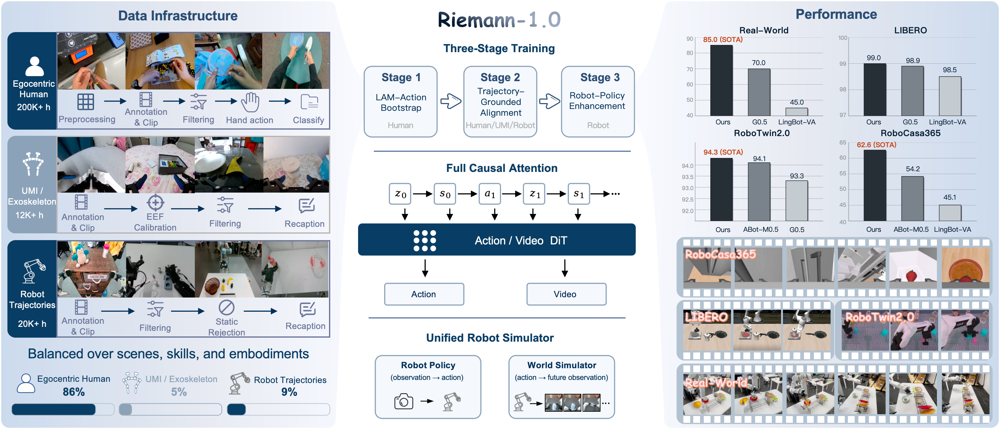
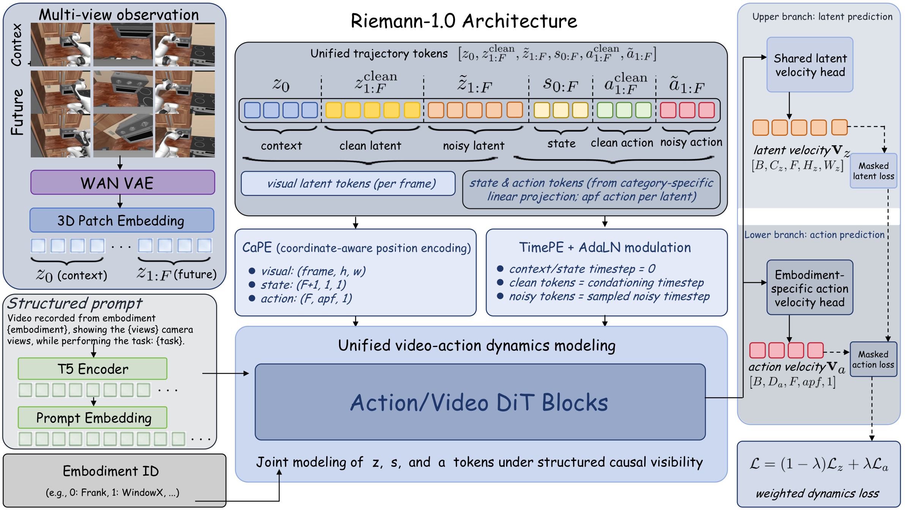
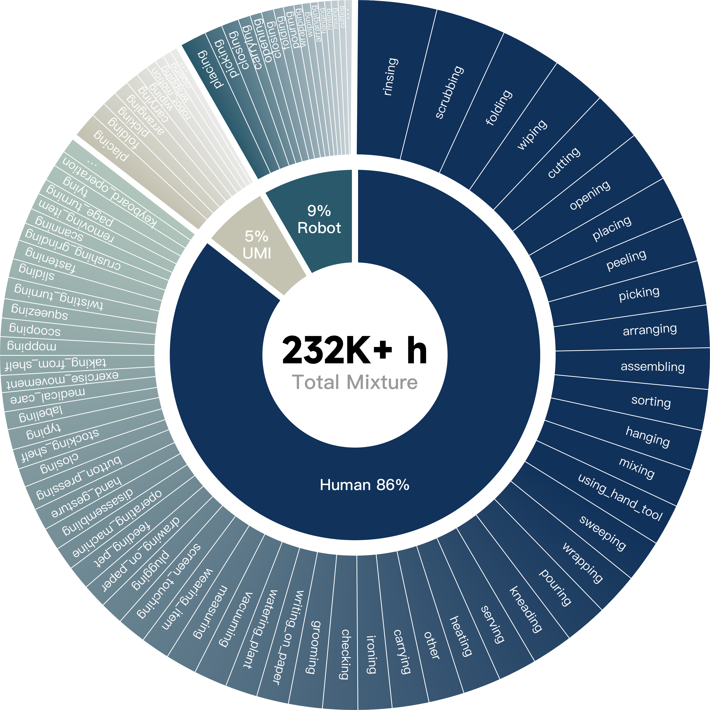
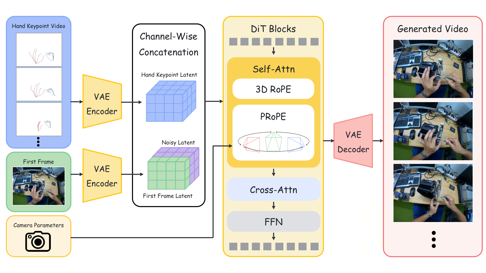
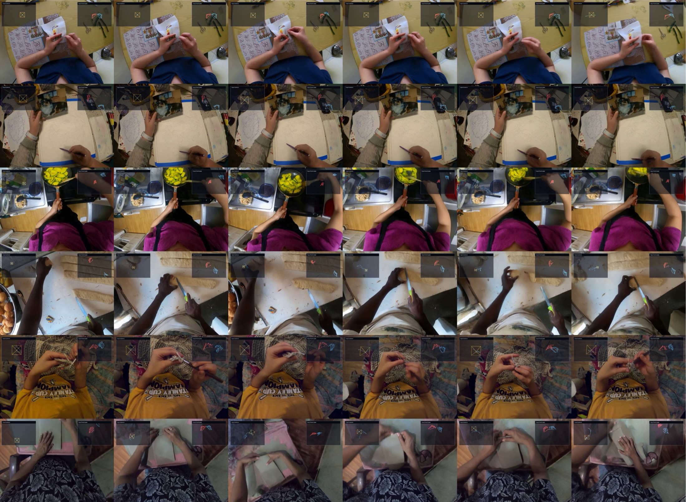

Paper Deep Dive · WAM · Embodied Pretraining
Riemann-1.0：把机器人交互顺序写进 World Action Model
它不是“先生成未来视频，再从视频读动作”，也不是把 action 与 video 一起无序去噪。Riemann-1.0 把一次交互写成 observation/state → action → next observation 的因果序列，用同一套 DiT 在 policy 模式预测动作、在 simulator 模式接受动作并预测视觉后果，再用人类 ego、UMI 与机器人轨迹组成从弱动作到可执行动作的三级课程。
0. 一句话结论 #
Riemann-1.0 解决的是 WAM 的交互顺序与异构数据难统一：它按“历史观测先预测动作、当前动作再预测下一视觉”的全因果顺序联合训练 action/video flow matching，并用 LAM 伪动作 → 人手/UMI/机器人真实轨迹 → 高质量机器人数据三级预训练，把 232K+ 小时异构经验转成可执行策略；代价是自回归去噪与长 KV cache，并且论文没有给模型规模、训练算力、关键消融和可运行代码，视觉 simulator 也只有定性结果。
核心 insight：WAM 真正要统一的不是“两个输出头”，而是一条因果接口：$a_t$ 必须只从过去产生，$z_t$ 必须在看到 $a_t$ 后产生。这样 policy 和 simulator 才是同一联合分布的两种使用方式，而不是两个松散拼起来的系统。

1. 论文定位：它到底在做什么 #
任务属于多本体机器人 World Action Model。输入包括语言任务 $c$、多视角视觉观测、机器人状态和历史动作；模型需要同时学习两个条件分布：
它的任务不是从互联网视频直接恢复精确机器人控制。人类视频先提供 interaction dynamics 与伪动作，UMI/3D 手轨迹负责把视觉变化靠近连续控制，真正可执行的动作仍由 robot trajectory 落地。
| 范式 | 因子分解 | 主要问题 | Riemann-1.0 的差异 |
|---|---|---|---|
| DreamZero 式 joint denoising | $p(z_{1:T},a_{1:T}\mid z_0,s_0,c)$ | 高维视频与低维动作同时去噪，尺度和时间频率差异大 | 按 action→consequence 分块自回归 |
| LingBot-VA 式 video-first | $p(z_{1:T}\mid z_0,c)p(a_{1:T}\mid z_{\le T},s,c)$ | 动作依赖先生成的未来视频，控制延迟高且受视频误差影响 | 动作先于对应未来视觉产生 |
| Fast-WAM 式 decoupled | video DiT + action DiT | 模块清晰，但 action 仍可能依赖 predicted visual feature | 单 backbone、同一 causal history、两类 velocity head |
| Riemann-1.0 | $\prod_t p(a_t\mid h_t)p(z_t\mid h_t,a_t)$ | 自回归去噪慢、暴露误差累积 | 一个模型兼容在线 policy 与 action-conditioned rollout |
需要收紧的表述：论文称其为 multi-embodiment visual world simulator。它预测的是相机视觉 latent，不预测未来 robot state、力、接触或奖励；所以更准确的名称是动作条件视觉模拟器，还不是可直接替代 physics engine 的完整状态模拟器。
2. 方法总览：一个序列，两种读法 #
task + embodiment + camera layout
-> T5 text embedding
multi-view RGB canvas -> Wan VAE -> 3D patch tokens z
robot state/action -> embodiment-specific canonicalization
-> normalize + pad + category-specific projections
unified tokens:
[z0 context, z_clean history, z_noisy target,
s0:F, a_clean history, a_noisy target]
-> CaPE + TimePE/AdaLN
-> shared Action/Video DiT + structured causal mask
-> shared latent velocity head: V_z
-> embodiment-specific action velocity head: V_a
policy mode: h_t -> denoise a_t -> execute -> encode real observation z_t
simulator mode: h_t + supplied a_t -> denoise z_t -> decode future RGB
关键张量与符号
| 符号 | 形状 / 含义 | 实现位置 |
|---|---|---|
| $z_0$ | 首个多视角 canvas 的 clean visual latent | Wan VAE + 3D patch embedding |
| $z_{1:F}$ | $F$ 个未来 latent；每个覆盖一段低层动作 | latent flow-matching target |
| $s_{0:F}$ | $F+1$ 个状态，初始状态加每次 transition 后状态 | 只作为条件，不由模型生成 |
| $a_{1:F}$ | $[B,D_a,F,apf,1]$；每个 latent 对应 $apf$ 个 low-level action | action flow-matching target |
| $c$ | task + embodiment + view configuration | T5 cross-attention condition |
| $e$ | embodiment/category ID | 选择 state/action projection 与 action head |
【不确定】论文图给出了抽象形状，却没有报告 $F$、训练时真实 $apf$、$D_a/D_s$、VAE latent channel、patch size、DiT depth/width 或参数量。模拟 benchmark 说明一个视觉 latent 对应 16 个 low-level actions，但不能据此断定所有真机与预训练数据都固定使用 16。验证只能等代码/config 发布，或检查后续 checkpoint 的 adapter shape。
3. 关键创新点 #
3.1 Action-first 的全因果分解
旧方法瓶颈：joint denoising 没显式表达“动作导致观察变化”；video-first 必须先想象视频才能行动；双 DiT 则不保证 policy 与 simulator 共享同一因果状态。
怎么改：每个 step 先生成动作 chunk $a_t$，再把它加入上下文并生成视觉后果 $z_t$。真机时第二项由环境 observation 替代；模拟时第二项由模型生成。
为什么有效：policy 和 simulator 不再是两条不同 pipeline。给定历史时，动作 head 是控制接口；给定候选动作时，latent head 是 consequence interface。二者共享的 hidden state 必须同时解释“该做什么”和“做完会怎样”。
代价与限制：一个 interaction block 内仍需 diffusion/flow denoising；长时控制需要 growing KV cache 与 sliding window。更重要的是，论文没有通过“打乱 action-video 顺序”“去掉 latent loss”或“joint/video-first matched-compute”消融证明收益确实来自因果顺序。
3.2 结构化 teacher forcing mask：块级因果，不是逐 token 三角形
训练序列同时放入 clean history 与 noisy targets。若使用普通 full attention，noisy $a_t$ 会偷看未来 $z_t$；若使用严格逐 token causal mask，同一帧的空间 patch 又无法双向建模。作者用 frame ID、time ID、clean/noisy flag 构造 block mask：
| Query token | 可以看 | 不能看 |
|---|---|---|
| clean token | 当前及过去的 clean blocks | 未来 clean block、所有不应出现的 target |
| noisy action $\tilde a_t$ | 过去 clean history；同 noisy action block 内双向 | 当前/未来视觉结果 |
| noisy latent $\tilde z_t$ | 过去 clean history、当前 clean action $a_t$；同 noisy latent block | 未来 transition |
| padding | 无 | 全部屏蔽 |
机制：它保留 frame 内空间双向 attention，同时在 interaction block 之间保持 action→visual consequence 的因果方向。所谓“fully causal”应理解为交互时间轴上的块级因果，不是所有 patch token 的严格单向语言模型。
3.3 多本体不是共享同一动作空间，而是共享 dynamics backbone
不同机器人先各自转换到 embodiment-specific canonical order，再按本体统计量归一化，并 pad 到最大 $D_a,D_s$。category slot 选择本体专属的 state/action input projection 与 action velocity head；loss mask 只在有效 channel-step 上归一化。
为什么有效：视觉、语言和时序推理参数可跨机器人共享，但最后几层仍保留关节数、控制量和单位差异。它避免把 Frank、WindowX、双臂和灵巧手误写成一个含义不一致的“大动作向量”。
容易忽略的实现：padding 区域不仅不算 loss，clean sample、noise、noisy sample 与 velocity target 都保持零。否则训练时 pad channel 是高斯噪声、部署时却是零，会形成非常隐蔽的 train-test mismatch。
3.4 Progressive Embodied Pretraining：动作监督逐级变“可执行”
| Stage | 数据 | Action supervision | $\lambda$ | 目标 |
|---|---|---|---|---|
| I. LAM Bootstrap | 200K+ h 无标签 ego video | 冻结 LAM 的 32D pseudo action | 0.1 | 先学广泛视觉 dynamics |
| II. Trajectory Alignment | 3D hand + 12K+ h UMI/外骨骼 + robot | 连续手/EEF/关节动作 | 0.5 | 把 motion token 对齐到真实轨迹 |
| III. Policy Enhancement | 20K+ h 高质量 robot-only | 可执行 robot action/state | 0.9 | 校准 actuator convention 与闭环稳定性 |
| Post-training | 目标任务 teleoperation | 目标本体真机动作 | 0.95 | 适配部署任务 |

核心不是把三种数据混在一起：Stage I 的 latent action 只需要解释视觉转移；Stage II 的 hand/UMI 把它拉向连续几何控制；Stage III 才让 action head 偏向机器人可执行分布。$\lambda$ 从 0.1→0.5→0.9→0.95，就是这条监督可信度曲线的显式实现。
代价与限制：LAM pseudo action 仍可能编码相机运动、遮挡和画面变化，而不是 agent action；3D 手重建依赖 MANO、VGGT-Ω 与 temporal refinement。论文没有给三阶段各自 step、mixing ratio 或阶段消融，所以目前无法判断收益来自 curriculum、总训练量还是 robot-only 最后一阶段。
4. 训练和推理流程 #
训练输入与输出
- 按 embodiment 把多路 camera 拼成固定 canvas，resize 后经冻结或预训练的 Wan VAE 得到 visual latent。
- 把 task、embodiment type 与 view 数写成结构化 prompt，经 T5 encoder 得到 cross-attention condition。
- state/action 按本体定义重排、归一化、padding；每个 visual transition 对齐一段 $apf$ low-level actions。
- 采样 latent noise level 与 action noise level，构造 clean history 和 noisy target block。
- 共享 DiT 在结构化 mask 下输出 latent velocity $V_z$ 与 action velocity $V_a$。
- 用有效性 mask 计算两项 flow loss，以阶段相关 $\lambda$ 合并反向传播。
Policy 模式：真实环境关闭视觉生成回路
- 首帧 $z_0$、初始 state $s_0$ 与文本 condition 初始化 KV cache。
- 从高斯 noisy action 开始，用 flow scheduler 去噪得到 $a_t$。
- 把 clean action chunk 写入 cache，开环执行其中 $apf$ 个 low-level controls。
- 环境返回真实多视角 observation 与最终 state；编码为 $z_t,s_t$ 写入 cache。
- 重复，窗口满后丢弃早期 cache，并以最近 observation 重新初始化上下文。

Simulator 模式：动作成为可控输入
- 输入当前 observation、task prompt、state 与候选 future action chunk。
- 跳过 action sampling，直接把 supplied action token 放入因果序列。
- latent head flow-denoise 对应未来 $z_t$，Wan VAE 解码为 RGB。
- 长 horizon 时把生成 latent 重新作为 clean context，自回归滚动。

5. 关键公式与实现张量 #
5.1 Flow matching 的线性路径
$x$ 可以是 visual latent 或 action tensor；$\sigma=0$ 是 clean data，$\sigma=1$ 是 Gaussian noise。模型学习从 data 指向 noise 的常速度 $\epsilon-x$；采样时从 noise 端反向积分到 clean data。论文没有写 $\sigma$ 的采样分布、ODE solver 与 denoising step 数。
5.2 Visual latent velocity
实现中 $z_\sigma$ 是当前 noisy future-latent block；key/value 来自过去 clean visual/state/action 以及当前 clean action。$v^z_\theta$ 输出与 latent target 完全同形状。$a_{\le t}$ 是公式中最关键的下标：视觉后果可以看当前动作。
5.3 Action velocity
$a_\sigma\in\mathbb R^{B\times D_a\times F\times apf\times1}$。动作只能看 $z_{ $\lambda$ 不只是 loss 权重，也是 curriculum 的能力旋钮：早期要求 backbone 解释视觉变化，后期把容量压向 executable control。但两项 loss 的原始尺度、有效 token 数和梯度范数没有报告，不能只凭数值认为 Stage II 恰好“各占一半”。 两帧各切成 $16\times16$ patches，并加入 learnable action-prompt token。future-frame prompt 的 hidden state 投影为 32D Gaussian moments；decoder 只看当前帧与 sampled latent，不能直接看 $x_{t+1}$。离线标注时使用 posterior mean $\mu_t$，避免 sampling noise。它编码的是“解释这一帧变化所需的信息”，不等价于真实控制命令。 最值得肯定的是 policy 模式用真实新观察替代 generated latent，避免把视频生成误差硬塞进控制环。最值得警惕的是 simulator 模式：它同时承受 clean-history teacher forcing、生成视觉自回归和未生成 state 三个 mismatch，论文尚未用长 rollout 指标量化误差增长。 真机覆盖四层按颜色堆叠、衣物折叠、桌面整理和厨房整理。每任务 15 条 teleoperation demonstrations，并将四任务合并微调一个 generalist policy；每个主任务的 SR/PSR 表中数值以 5% 为步长，意味着应是 20 次 trial。held-out compositional 与 OOD 则每任务 10 次。  【不确定】截至 2026-07-19，官方 GitHub 只是 project-page 仓库，包含论文、网页、图片和视频，不含训练/推理代码、配置、checkpoint、数据 manifest 或机器人控制实现。最现实的复现顺序是：先单本体、短序列、固定 $apf$ 验证 mask 无泄漏；再做 Stage III robot-only；随后加入 Stage II UMI/hand；最后才引入 200K+ 小时 LAM pseudo action。每一步都必须保留相同 compute 的 action-only 与 latent-only 对照。 一句话记忆：它把 WAM 从“同时预测动作和视频”推进到“按真实交互因果顺序预测动作和视频”。5.4 双目标权重
5.5 LAM：从相邻帧提取 32D 伪动作
6. 训练与推理是否真的对齐 #
检查项 训练 推理 风险 历史 action teacher-forced clean GT actions policy 自己生成的 actions 动作误差会进入后续 cache 历史 visual clean GT visual latents policy 用真实观察；simulator 用生成观察 policy mismatch 小，simulator exposure bias 大 State 记录轨迹 replay policy 从真实机器人读；simulator 未生成 纯 simulator 无法独立闭合完整状态演化 Action block 整块 noisy target 去噪 整块生成后执行 $apf$ 步 chunk 内无视觉反馈，接触误差只能下一块纠正 Attention context 固定训练窗口 growing cache + sliding reset 窗口长度与 reset 策略未给 Padding 数据、噪声、target 全部置零并 mask 无效 action channel 为零 这一点对齐得较好 Noise path 随机单一 $\sigma$ 做 velocity regression 多步 ODE/flow integration solver accumulation error 数据分布 ego/UMI/多机器人 目标 robot 与目标 camera layout 依赖 Stage III/post-train 做最终校准 7. 实验复盘：策略结果强，机制证据不足 #
结果总览
评测 Riemann-1.0 最强对手 差值 RoboCasa365 Target-50 62.6 ABot-M0.5 54.2 +8.4 RoboTwin 2.0 Avg. 94.3 ABot-M0.5 94.1 +0.2 LIBERO Avg. 99.0 Being-H0.5 / G0.5 98.9 +0.1 真机四任务 Avg. SR 85.0 G0.5 70.0 +15.0 真机四任务 Avg. PSR 94.43 G0.5 80.18 +14.25 Held-out compositional/OOD Avg. 75.0 $\pi_{0.5}$ 47.5 +27.5 哪些结论有数据支持
哪些结论还没有被实验隔离
8. 可复现清单 #
模块 论文已给 仍需确认 / 常见坑 Trajectory schema prompt、embodiment、views、$z$、$s$、$a$、semantic metadata timestamp unit、episode boundary、frame/action frequency Multi-view 按 embodiment 拼 canvas，再送 Wan VAE canvas layout、resize/crop、缺失 camera mask Action/state canonical order、per-embodiment normalize、pad、valid mask 坐标系、rotation representation、统计量 clipping LAM 16×16 patches、32D latent、弱 KL、posterior mean 标注 $\beta$、encoder/decoder 宽深、训练帧率与数据量 DiT CaPE、TimePE、AdaLN、T5 cross-attention、双 velocity head 参数量、层数、hidden size、head 数、初始化 Mask frame/time/clean flag 构造 block-causal visibility token serialization 顺序、同 block state/action 的精确可见性 Flow matching 线性 path、velocity MSE $\sigma$ distribution、solver、steps、CFG、EMA Curriculum $\lambda=0.1/0.5/0.9/0.95$ 与阶段数据类型 各阶段 steps、batch composition、sampling temperature Optimization 未披露 optimizer、LR、warmup、WD、precision、grad clip、hardware Online control KV cache、execute $apf$、sliding window reset window 长度、latency、replan rate、安全约束、失败恢复
9. 可能的改进方向 #
改动点 预期收益 风险 验证实验 生成 proprio/contact state，而不只生成 RGB latent 让 simulator 真正闭合状态转移，可用于 model-based planning 不同本体 state 难共享，传感器噪声高 预测 EEF/joint/contact，报告 multi-step state error 与 planning success scheduled sampling / self-forcing 减小视觉与动作历史的 teacher-forcing gap 训练不稳定、计算显著增加 按 rollout horizon 报告 latent drift 与 policy SR Action Consistency reward 或 cycle check 让生成视频对动作更敏感，而非只保持外观 需要 inverse model，可能被 shortcut 交换 action chunk，测 predicted object/EEF displacement 的可分性 LAM 中显式消除 camera motion 伪动作更接近 manipulation effect 依赖 pose estimator，快速头动和动态背景易失败 raw LAM vs ego-stabilized LAM，比较 Stage I 后 robot linear probe 自适应 $\lambda$ 与 gradient balancing 避免固定权重被 token 数和 loss scale 淹没 可能削弱课程的明确方向 固定 $\lambda$、GradNorm、uncertainty weighting 的 data-efficiency 曲线 分层 action：skill token + continuous chunk 长时任务减少 cache 压力，并增强可组合规划 skill boundary 与低层控制可能脱节 RoboCasa Composite 与真机 organization 的 horizon-scaled 对比 10. 速读备忘卡 #